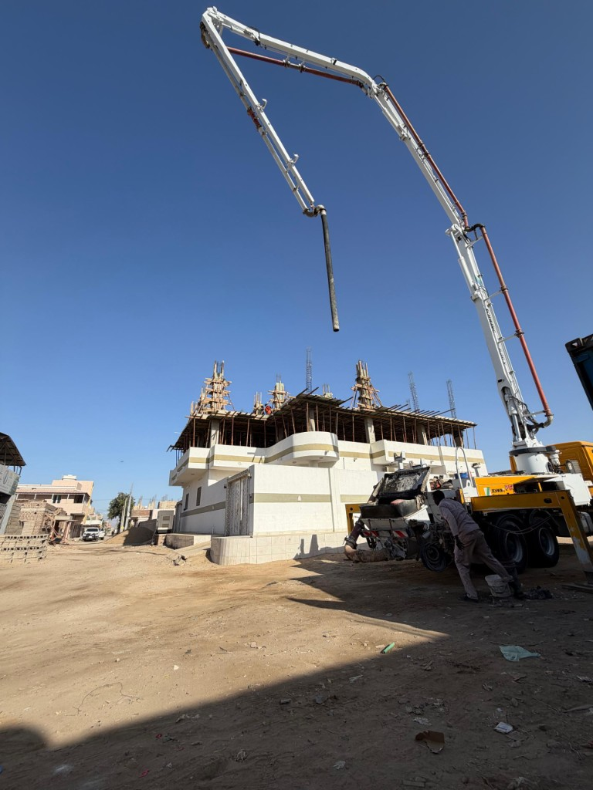
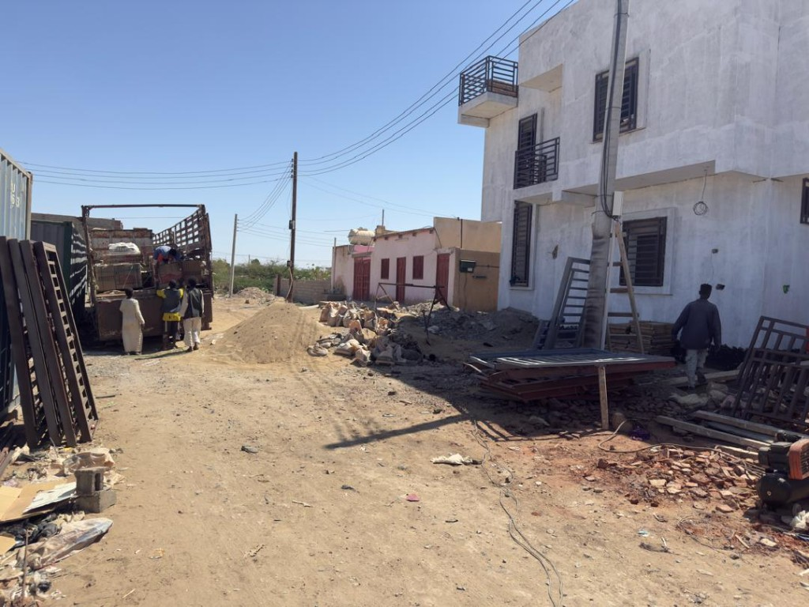
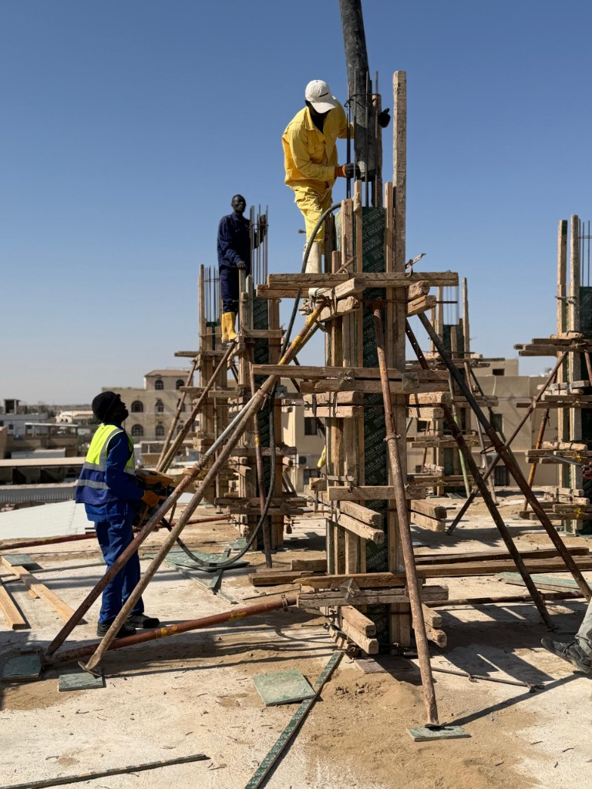
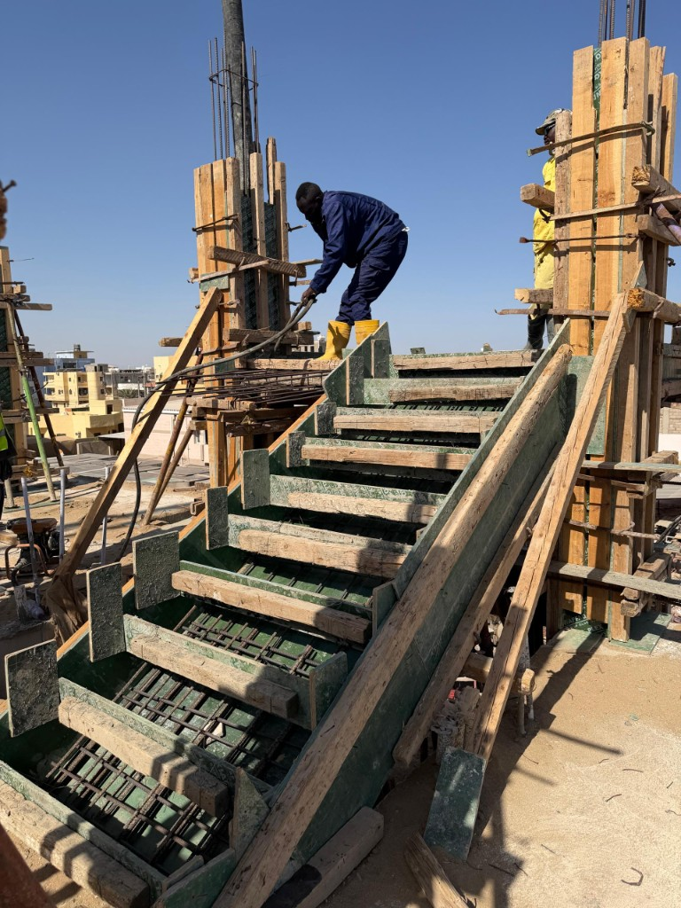
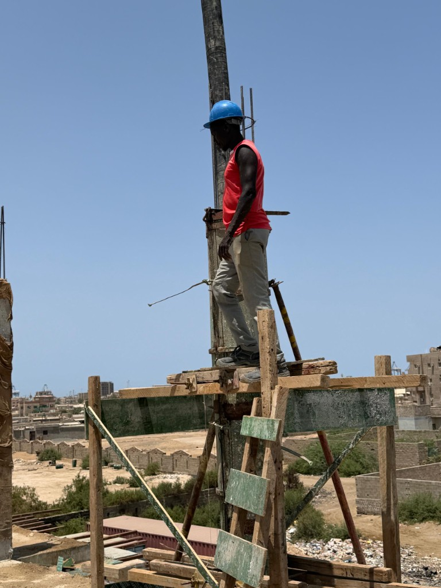
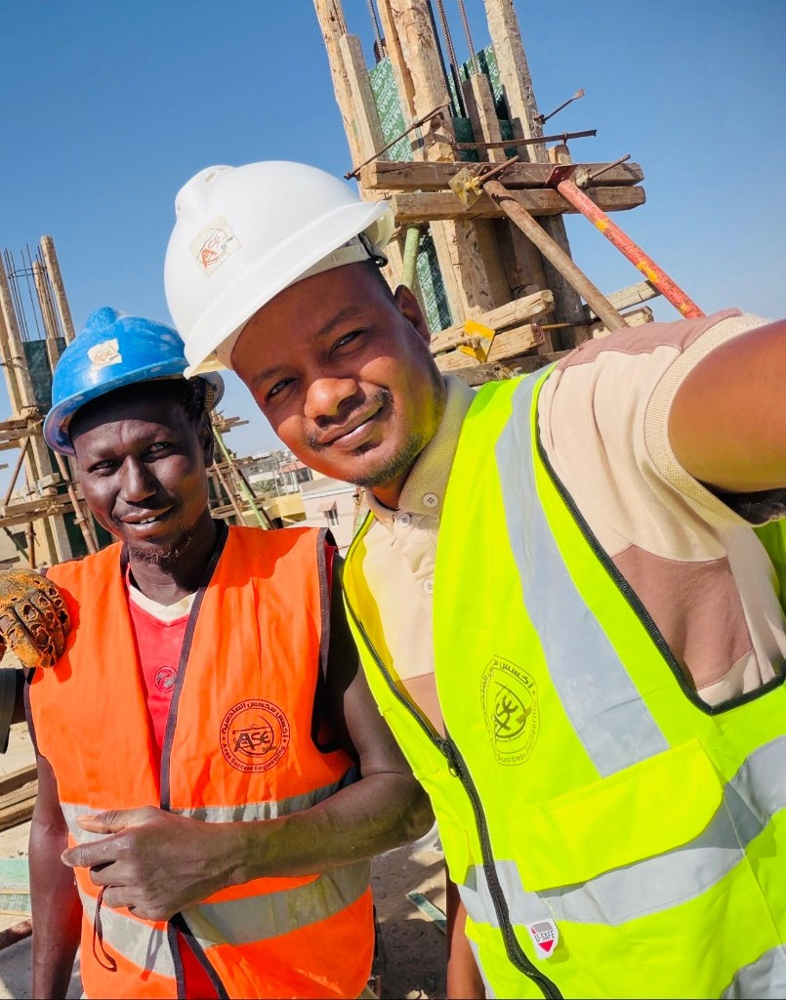
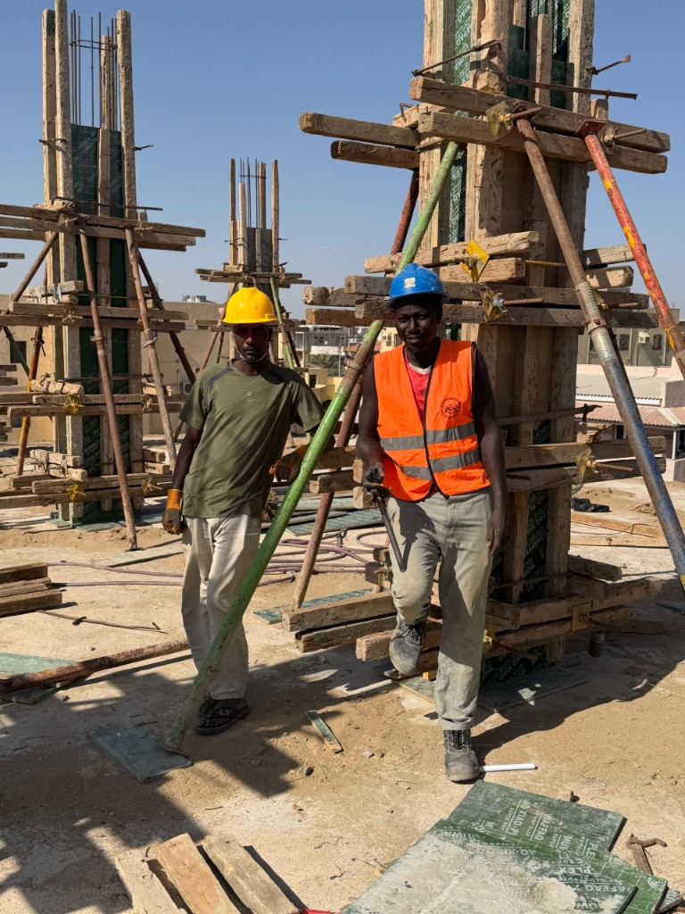
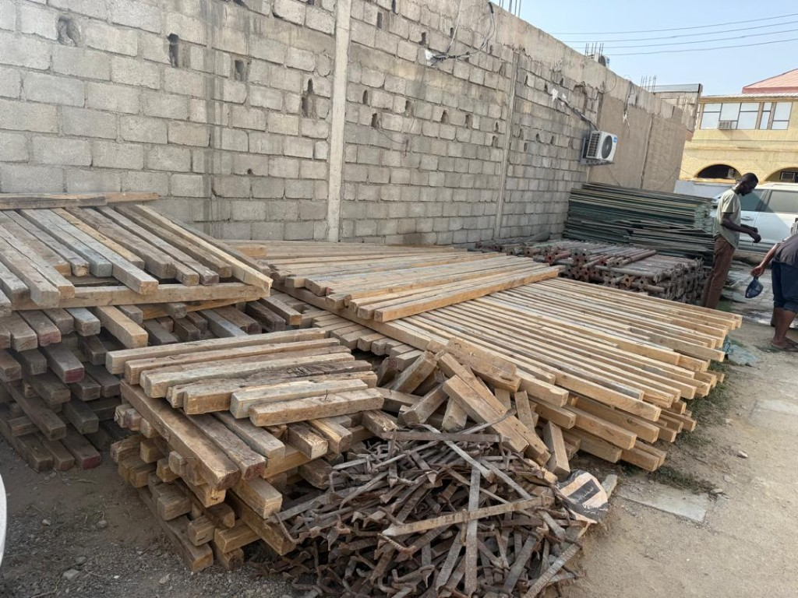
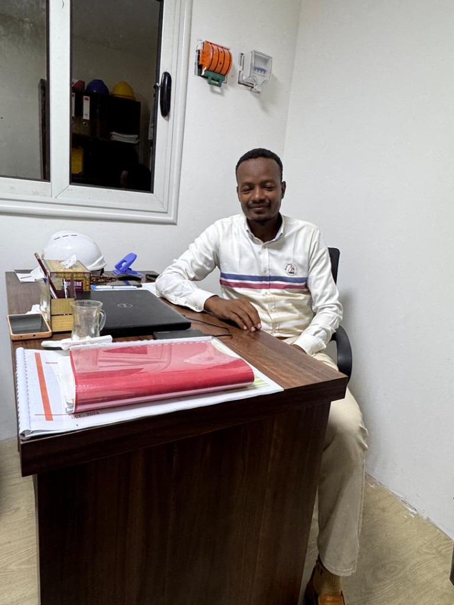
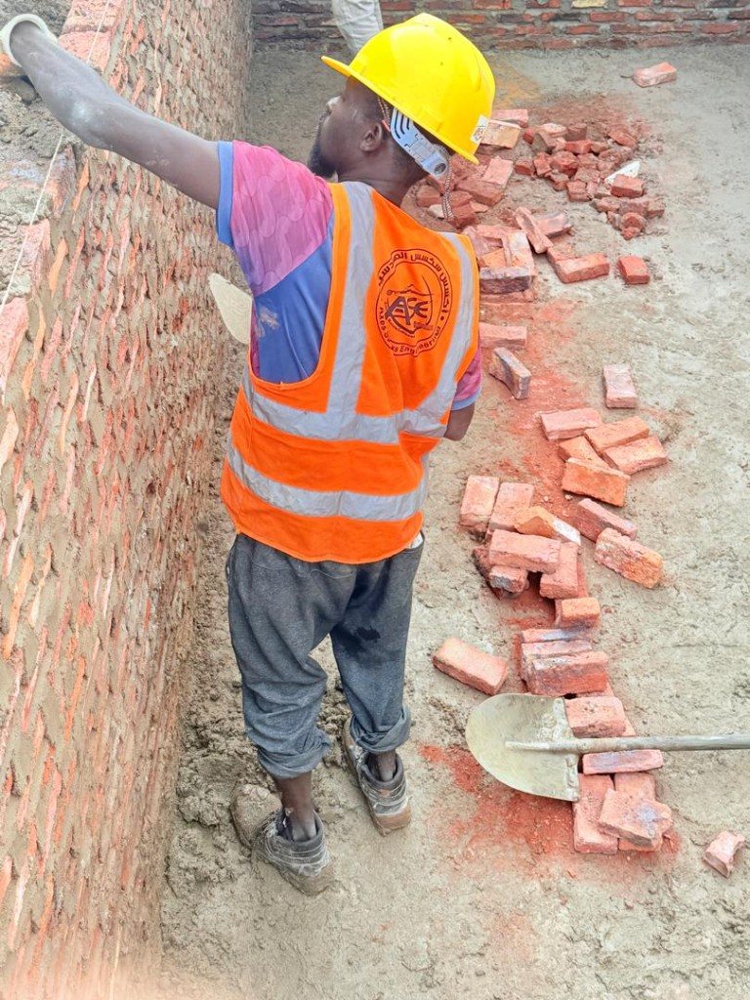

AXES GROUP / SUDAN
نبني الغد، اليوم
تميّز في الإنشاءات والبنية التحتية والهندسة المدنية، من التصور الأول إلى التسليم.
01 / 03الهندسة · التنفيذ · المستقبل
01 / AXES GROUP
خبرة هندسية تصنع أثرًا يدوم
تعمل اكسس قروب في الإنشاءات والأعمال المدنية وإدارة المشاريع. نجمع بين التخطيط الدقيق والمتابعة في الموقع لتنفيذ الأعمال بعناية في كل مرحلة.
تعرف على الشركة ↗
24/7متابعة في موقع العمل
0مجالات خدمات رئيسية
0متابعة هندسية في الموقع
0لغتان للتواصل
02 / SERVICES
خدمات هندسية متكاملة
من الأساسات إلى إدارة المشاريع، نربط التخصصات بقرار تنفيذي واضح.



صورة توضيحية

صورة توضيحية03 / SELECTED WORK
عرض المشاريع ↗أعمال من أرض الواقع
04 / OUR APPROACH
الجودة والسلامة ضمن كل قرار
تبدأ النتائج الموثوقة من موقع عمل منظم، ومتابعة للمواد والتفاصيل، وتواصل واضح بين فرق المشروع.
منهجنا في التنفيذ ↗السلامة أولًا
تنظيم الموقع ومتابعة ضوابط السلامة أثناء التنفيذ.
ضبط الجودة
مراجعة التفاصيل والمواد خلال مراحل العمل.
الاستدامة
التخطيط لاستخدام الموارد بعناية وتقليل الهدر.
المسؤولية البيئية
مراعاة أثر الأعمال على الموقع والمحيط.
05 / INSIGHTS
رؤى من موقع العمل
موضوعات مختصرة عن منهج العمل والتخطيط والتنفيذ.
ON THE GROUND
شكل العمل في الموقع
عواكس وخوذات وعمل جماعي — صور حقيقية من مشاريعنا.


